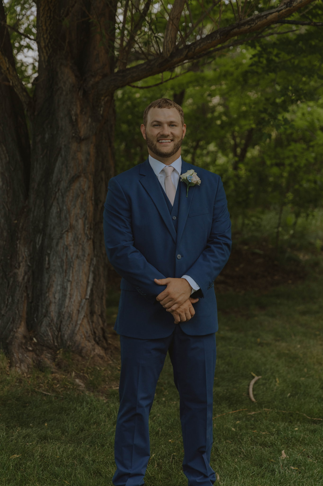

Board of Directors

Kyle Rosenbrock
FootballPresident
ATHLETIC CAREER
CSU Pueblo football alumnus and leader with a strong history of team success and academic achievement.
Senior Supervisor, High Temperature Composites at Collins Aerospace (RTX). Holds a BSE and MS in Engineering from CSU Pueblo and an M.Eng from Cornell University.
Scotland Coyle
Football · C/OL · 2011–2014Vice President
ATHLETIC CAREER
2014 All-American and National Champion. Anchored the offensive line on CSU Pueblo's 2014 NCAA Division II Football National Championship team. First-Team RMAC All-Academic.
Owner of Integrity Worx Handyman LLC. Colorado native with over a decade of experience in construction and home services. Known for his integrity, craftsmanship, and community focus, he is committed to supporting the mission of Pack Forever Foundation.

Austin Micci
Football · RB · 2016–2019Treasurer
ATHLETIC CAREER
2x CoSIDA Academic All-American. 2019 RMAC Academic Offensive Player of the Year. Finished among CSU Pueblo’s top all-time performers.
Financial professional focused on helping individuals and families plan for long-term success.

Drew Swartz
Football · OG · 2009–2013Secretary
ATHLETIC CAREER
2013 All-American offensive guard. Part of an offensive line that ranked 6th nationally in total offense. Key contributor on back-to-back RMAC championship teams in 2012 and 2013.
Technology Analyst at State Farm. Holds an MBA and CPCU designation. BS in Management and MBA in Marketing from CSU Pueblo.

Joe Rosenbrock
FootballBoard Member
ATHLETIC CAREER
Led the team in tackles (107) during the 2014 National Championship season. Academic All-RMAC First Team. Received the RMAC Summit Award for highest GPA on a Championship team.
Math Teacher and Head Football Coach at Brush High School in Brush, Colorado. Named CSU Pueblo Alumni Teacher of the Year (High School) in 2020. Now in his fourth season leading the Beetdiggers, he has the program trending upward and ranked in Colorado 2A football.